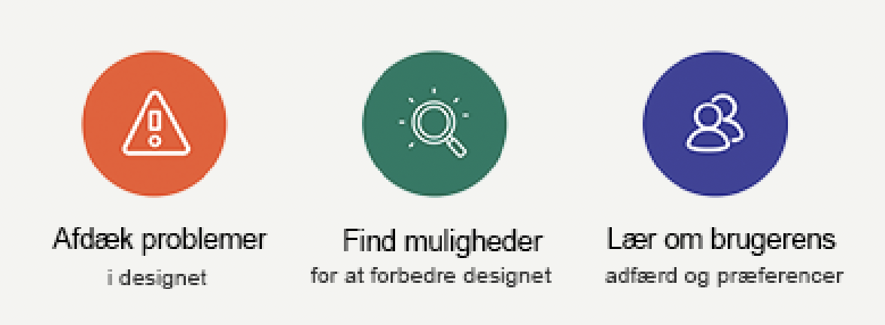

Brugertest
En brugertest er en metode inden for brugeroplevelse design og produktudvikling. Den anvendes til at evaluere, hvor let og effektivt en person kan bruge det pågældende produkt, system eller service.
Formålet med en brugertest er at identificere eventuelle problemer eller udfordringer, som brugere kan støde på, mens de interagerer med det testede produkt

Usability test
Den mest grundlæggende type brugertest, hvor deltagere udfører specifikke opgaver ved hjælp af produktet, mens observatører registrerer deres adfærd og eventuelle problemer.
Formålet er at evaluere, hvor brugervenligt produktet er.
En guide til en vellykket test
For at sikre sig en vellykket brugertest er der flere forberedende trin, som man bør gennemføre. Her er et par af de trin, som du bør have fuldført inden du starter din test.
Definer mål og formål:
Identificer formålet med testen og de specifikke mål, du ønsker at opnå.
Identificer målgruppen:
Definer din målgruppe nøje. Her vil man f.eks. oprette personas ud fra de brugere, du ønsker at teste produktet med.
Udvælg testopgaver:
Identificer de opgaver, som du ønsker, at brugerne skal udføre under testen. Opgaverne bør afspejle reelle scenarier og interaktioner, som brugeren vil stå over for i den virkelige verden.
Udarbejd en test guide:
Opret en detaljeret brugertest guide, der indeholder oplysninger om testopgaver, spørgsmål og anden relevant information
Rekrutter testdeltagere:
Identificer og rekrutter deltagere, der repræsenterer din målgruppe.
Backup plan:
Overvej eventuelle uforudsete problemer og udarbejd en backup plan..
Ved at udføre disse forberedende trin grundigt kan du maksimere værdien af din brugertest og sikre, at testen udføres effektivt og ordentligt.
Brugertest data
Når du har færdiggjort din brugertest, vil du have en del data. Men hvad skal den egentlig bruges til?
Og hvordan?
Helt enkelt, så skal du evaluere og fortolke den indsamlede data. Det er en helt afgørende fase for at identificere mønstre, problemer og succeser, og senere hen tage beslutninger om produktforbedring.
Før vi kan fortolke, skal du først organisere den indsamlede data. Det gøres ved at kategorisere den, så dataen er let tilgængelig og kan forstås klart.
Når dataen er organiseret kan du endelig begynde at analysere den. Det gøres f.eks. ved at man sammensætter vigtige temaer, holdninger eller udfordringer, som dukkede op under testen.
Herefter kan vi så identificere konkrete problemer eller udfordringer, som brugeren stødte på under testen.
Dog skal det også huskes, at anerkende de elementer, som fungerede og bidragede til en positiv brugeroplevelse.
Egne data
Gennem vores brugertest oplevede vi en generel konsensus om, at førstehåndsindtrykket af hjemmesiden var godt og overskueligt, samt at den havde følelsen af, at være en informationsside lidt ala wikipedia2, 3. Hvilket stemmer overens med det vi ønskede.
Derudover var der også bred enighed om, at hjemmesidens navigation (både på desktop og mobil) virker intuitiv og er nem at bruge.
Det blev også nævnt, at produktet er responsivt, hvilket gjorde det muligt for alle deltagerne at afprøve produktet på diverse elektroniske platforme3.
Vi fik også identificeret et par udfordringer, som brugerne oplevede under testen. Blandt andet (bl.a.) fortalte 2/3 dele af deltagerne, at de fandt tekst justeringen til at være en hindring i deres læsning af siden.
Dertil blev der også nævnt af 1/3 del af deltagerne, at de godt kunne tænke sig mere afstand mellem tekst-indholdet, overskrifter og billeder.4
Ændringer baseret på brugertest
På baggrund af de identificerede problemer, valgte design-teamet (aka mig) at ændre ‘text-align’ i HTML’en til at være venstrejusteret i stedet for lige margener.
Yderligere så rettede vi også afstanden mellem overskrifter og brødtekst, samt billeder og brødtekst for at give en mere afbalanceret følelse når brugeren læser indholdet på siden.